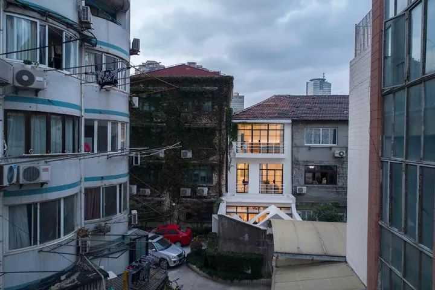
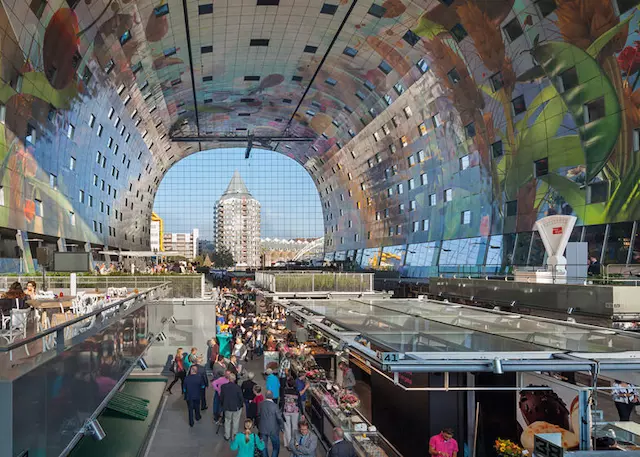
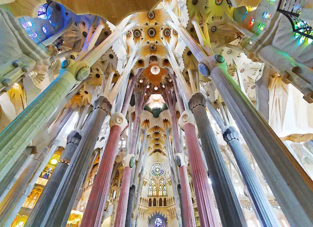
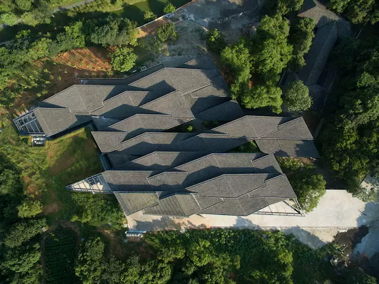

曾经见过这么一个设计，把市区的老房子改成联排别墅，在一堆老破房子里面特别的显眼。  刘恺 来自RIGI睿集设计创始人 Markthal 是世界首例集合了市场与住宅的建筑，这个巨大的拱形结构下涵盖 228 间公寓、100 多家食品商店或餐厅、超市以及一座地下停车场。  MVRDV 荷兰知名建筑事务所 从 1882 年开始修建，巴塞罗那著名的天主教堂圣家堂至今未完工，但因为独特而壮观的设计，这座建筑还没完工就被列入了世界遗产  安东尼奥·高迪 西班牙天才建筑师
民艺博物馆位于中国美术学院象山校区，依山而建，建筑的菱形屋顶相互交织，就像江南本地的小山村。这里原本是一个茶园，自然环境很好。隈研吾希望这座占地 4970 平方米的大型建筑不破坏当地的自然环境，而是融入其中。  隈研吾 建筑师 自 2012 年起曾分别于伦敦巴比肯中心和纽约现代艺术博物馆展出。2015 年 9 月来到上海余德耀美术馆，你可以不加防护地走进一场真实的雨中，看雨点密集地在身边落下，自己却不被淋湿。 雨屋（Rain Room） 兰登国际（Random International）艺术团队创作 水龙头的外观透明，因此可以清晰看见水流在水龙头中的流动状态。同时，玻璃的通透性使得一旦有异物出现，便会在水龙头内壁暴露无遗。水龙头上部的可拆卸性方便了清洁，你甚至可以把它拆下来放进洗碗机里面洗洗。 Philippe Starck 法国设计师